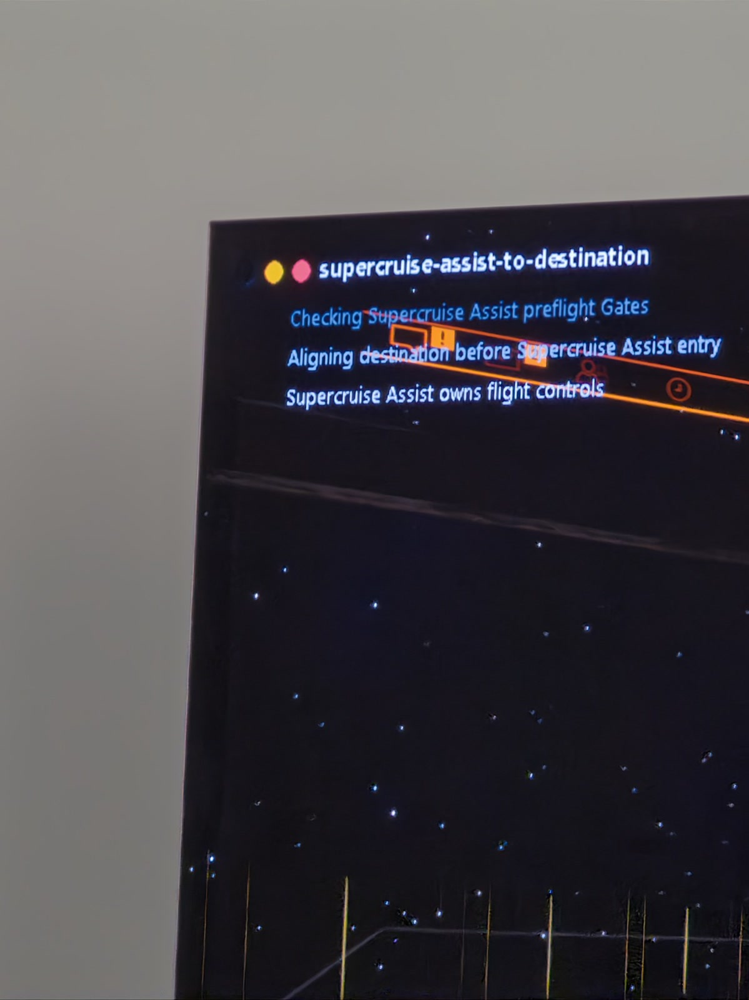

See
Capture the primary display through WGC, identify the foreground executable, resolve its owning Rule, and return a verified artifact with capture provenance.
A structured Windows runtime for AI agents
Install WindowsAgent with AssistGUI, connect over a trusted LAN or optional Tailscale network, and give your agent one structured runtime for seeing, acting, and verifying.
Start here
Download the release ZIP, launch AssistGUI in your signed-in Windows session, and manage the installed runtime without beginning at a terminal.
Extract the runnable AssistGUI distribution from the latest GitHub Release, then open it on Windows.
Install, update, repair, uninstall, start, or stop WindowsAgent. Inspect installed version plus Capture Agent and Watchdog state.
Use the LAN endpoint AssistGUI reports, or provide your own Tailscale auth key to enable the optional private-overlay connection.
AssistGUI reports connection status and address. Share the endpoint only with an agent on the same trusted network.
AssistGUI reports Tailscale status and IP, but it does not create credentials. Runtime endpoints are unauthenticated by default: keep them off the public Internet.
What WindowsAgent provides
WindowsAgent is more than a screenshot server, shell wrapper, remote desktop, or game bot. It exposes Windows capabilities through explicit, inspectable contracts.
Capture the primary display through WGC, identify the foreground executable, resolve its owning Rule, and return a verified artifact with capture provenance.
Send bounded, foreground-bound keyboard and pointer operations. Completion proves the input operation—not that the application accepted the intended result.
Execute structured process operations, uploaded PowerShell files, or bounded Starlark automation with durable results and explicit cancellation contracts.
Transfer files through the independent SFTP-only filesystem runtime. It is a data plane—not an SSH shell or hidden execution fallback.
Inspect processes and services today. Optional event, invocation, Evidence, and Visual Log paths add durable history at their documented maturity levels.
Reach the runtime over a trusted LAN. AssistGUI can report endpoints and manage an optional Tailscale route; that integration remains partially available.
Normal Windows control
WindowsAgent exposes the Windows capabilities an agent needs through one runtime instead of requiring a custom stack of unrelated capture, file-transfer, execution, and input bridges.
Capture the desktop, identify the foreground application, and inspect the process and service snapshot before deciding what to do.
Transfer files, run a structured command or uploaded PowerShell workflow, then use foreground-bound keyboard or pointer input where supported.
Read the operation result and, where the capability provides it, inspect durable events or Evidence instead of assuming a sent command achieved the goal.
Built for agents
An AI agent needs to know what it addressed, what was accepted, what finished, and what still needs independent verification. WindowsAgent makes those boundaries explicit.
Foreground executable identity selects the owning capability boundary. A window title or visible text does not silently choose a Rule.
Structured inputs, declared permissions, limits, deadlines, and result schemas keep each operation reviewable.
Protocol, permission, schema, process, and artifact failures stay failures. The runtime does not hide them behind guessed state or silent provider changes.
Where a capability supports it, invocation IDs and ordered events let an agent resume observation instead of inferring progress from timing.
A sent command proves only the command. When the goal matters, inspect the declared result or independent Evidence instead of assuming application success.
These are distinct claims. Not every operation supplies every layer of evidence; its own contract defines what can be proven.
Advanced game control
For games, an executable-scoped Rule can add finite Actions, streaming workflows, OCR, vision, and game bindings. The agent plans at a high level while a bounded local Action owns the fast feedback loop.
0 model callsin the shipped fast path. Deterministic Starlark Actions own the bounded feedback loop while the model plans and supervises outside it.
Streaming Starlark actions
1 FPS Evidence + gemma-4-e4b-it-8bit
High-level model · Codex / OpenCode
event journal + evidence timelineappend-only · durable · replayable
Advanced packages · real implementations
These executable-scoped packages extend the general runtime with game-owned observation, decisions, bindings, and Actions.
A supervised departure: the leave-station streaming action owns the whole flow — AUTO LAUNCH menu preparation, throttle gates, mass-lock checks, and three consecutive zero-speed OCR confirmations. The planner confirms the station, then just watches.
The inventory action reads game memory first; only when that fails does it locate the newest save file and decode it through a package-declared native DLL over the sandboxed FFI.
The screenparser action runs a pinned FP16 ScreenParser v2 ONNX model over DirectML on one caller-supplied, hash-pinned frame — then exits. No loop, no fallback, no residue.
Rules may declare Monitor or Reaction eligibility, but WindowsAgent does not ship a scheduler or subscription dispatcher. Catalog eligibility is not a running automation.
Real game evidence
The first shipped Rule uses local deterministic Actions for flight phases where a model-turn control loop is too slow. The media below is real runtime evidence, not a product mockup.

Extend the advanced layer
Each executable-scoped Rule owns its guidance, Action packages, schemas, bindings, coordinates, classifiers, and postconditions. Core stays game-neutral.
Quick start
go test ./...
./scripts/build-windows-capture-agent.sh.\.build\windows-capture-agent-console.exe `
--rules-dir (Resolve-Path .\.build\Rules)curl.exe --data-binary '{"include_cursor":true}' `
http://127.0.0.1:8787/v1/captures
curl.exe --data-binary '{"actionId":"elite-dangerous/ship-status","inputs":{}}' `
http://127.0.0.1:8787/v1/actions/invoke